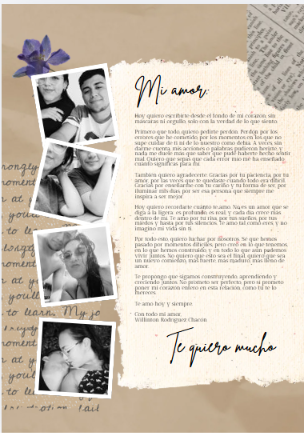
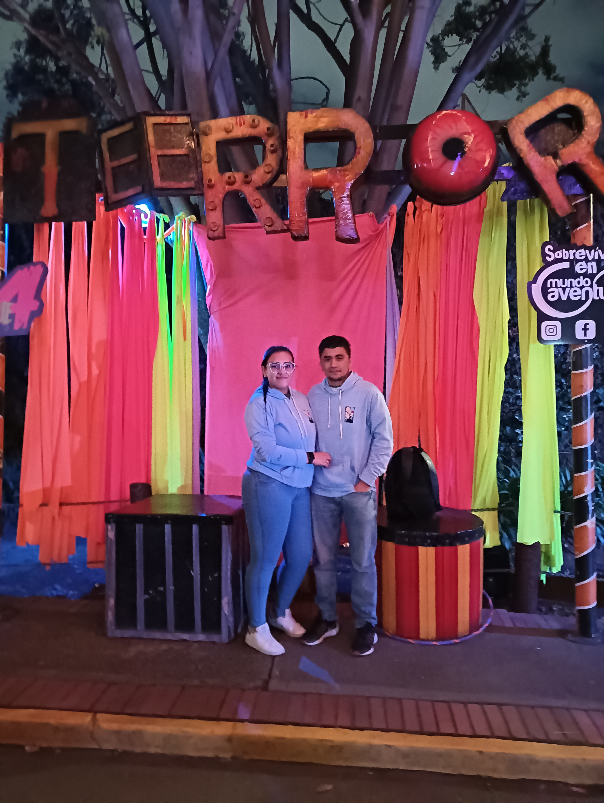
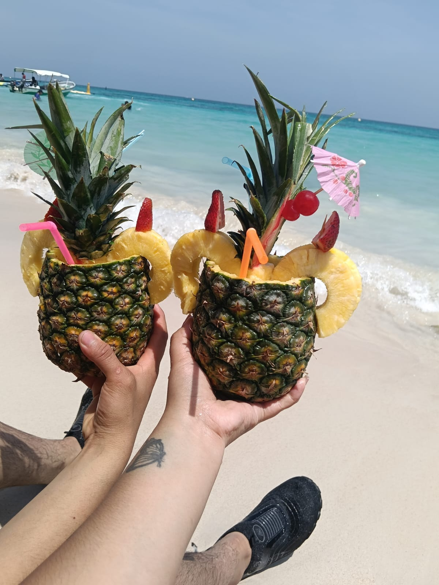
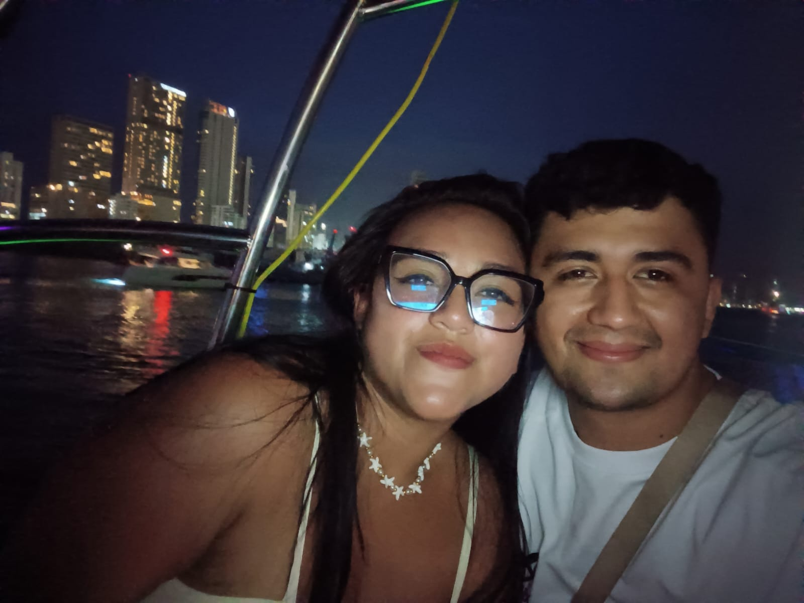
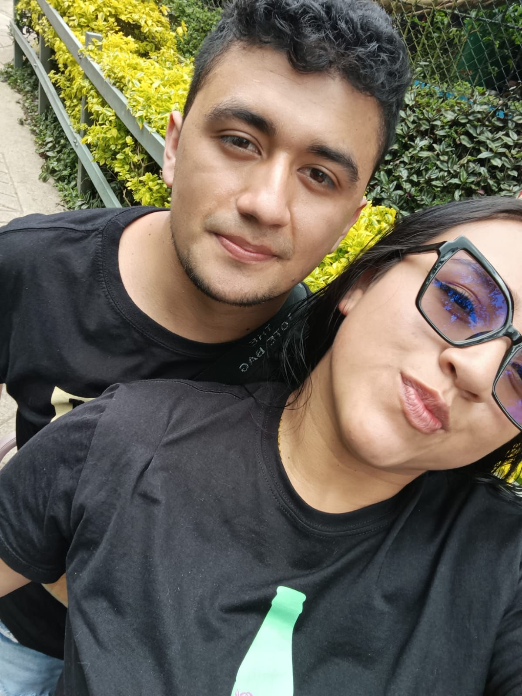
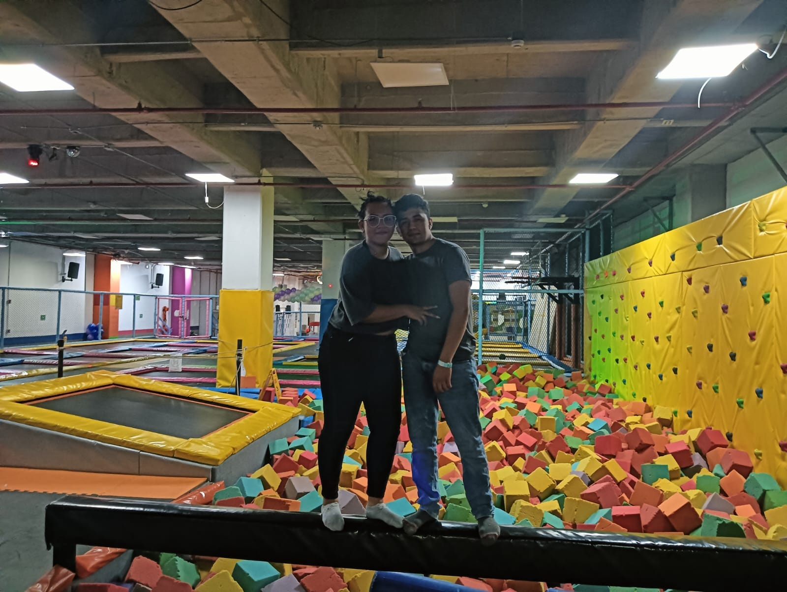

Nuestros recuerdos
A pesar de nuestras diferencias, hay muchos momentos que me gusta recordar. No todo ha sido perfecto, pero sí hemos vivido cosas muy bonitas.






Son momentos que, independientemente de lo que pase, siempre tendrán un lugar bonito en mis recuerdos.